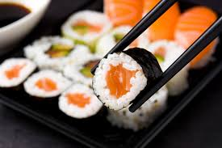

É um prato da culinária japonesa que possui origem numa antiga técnica de conservação da carne de peixe em arroz avinagrado. O sushi, na forma em que é conhecido atualmente, tem cerca de 200 anos; inicialmente, era vendido em barracas, como comida de rua, numa espécie de fast food.
O termo sushi vem de uma forma gramatical arcaica, com significado de "Risoto Japonês", não usada mais em outros contextos e significa, literalmente, "é azedo",[1] num reflexo das suas raízes históricas de alimento fermentado.
A ciência por trás da fermentação do peixe embalado no arroz é que o vinagre produzido a partir da fermentação do arroz quebra a proteína do peixe em aminoácidos. Isso resulta em um dos cinco paladares básicos, chamado umami em japonês. A forma mais antiga de sushi no Japão, narezushi, ainda se assemelha muito com esse processo. No Japão, o narezushi evoluiu para oshizushi e, por último, para edomae nigirizushi, que é o alimento conhecido mundialmente apenas como "sushi"
